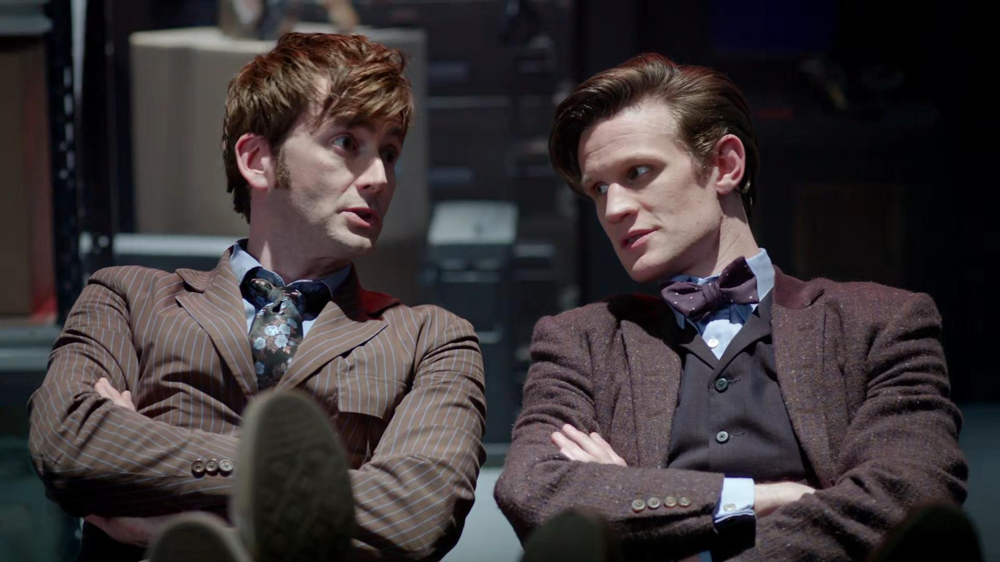
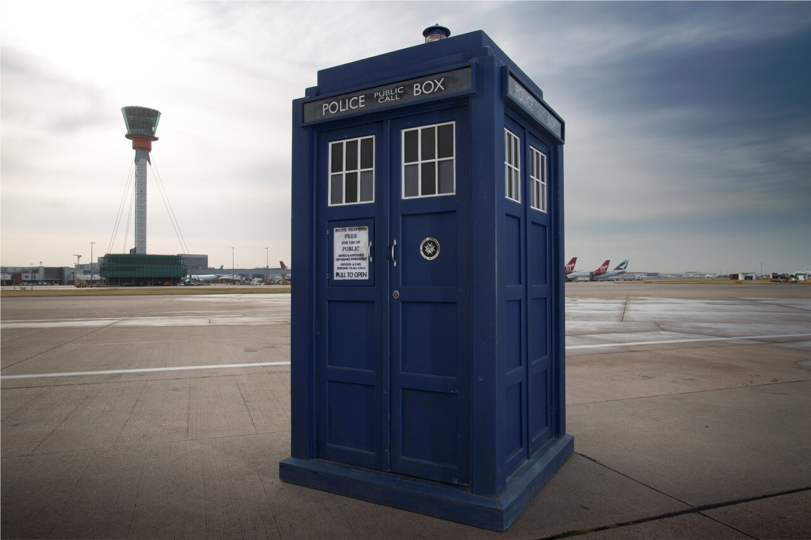

Uma série fantastica para assistir do inicio até a Matt Smith
Setima temporada
A sétima temporada da série britânica de ficção científica Doctor Who teve início a 1 de setembro de 2012 com "Asylum of the Daleks" e terminou em 18 de maio de 2013 com "The Name of the Doctor". É a terceira e ultima temporada de Matt Smith, Karen Gillan e Arthur Darvill como o Décimo primeiro Doutor, Amy e Rory respectivamente. Gillan e Darvill deixaram a série no quinto episódio e foram substituídos por Jenna-Louise Coleman, interpretando Clara Oswald. Smith deixou a série no Especial de Natal de 2013.

A temporada foi transmitida simultaneamente pela BBC One no Reino Unido, BBC America, nos Estados Unidos, e no Space no Canadá, e também na ABC, na Austrália, exibindo uma semana após o seu lançamento no Reino Unido e América do Norte. A série estreou em 1 de setembro de 2012.[1] e foi ao ar semanalmente até 29 de setembro de 2012. Seis episódios foram transmitidos em 2012, incluindo o especial de Natal "The Snowmen", com os oito episódios programados para a transmissão, a partir de 30 de Março em 2013.[2]
Tardis
A TARDIS que O Doutor pilota é um modelo antigo do tipo 40. Ela foi produzida pelos Senhores do Tempo e depois roubada pelo Primeiro Doutor em Gallifrey (planeta natal dele e dos Senhores do Tempo). Ela é muitas vezes chamada de "A TARDIS", pois é a única no universo devido a extinção dos Senhores do Tempo.

Circuito Camaleao
Outra característica da TARDIS é sua capacidade de camuflar-se, uma vez pousada. Funcionando corretamente, o circuito camaleão avaliaria o ambiente pouco antes da chegada e mudaria o exterior para se parecer com algo em comum com a paisagem.[4] Em uma ocasião depois de deixar Londres em 1963, o circuito camaleão da TARDIS do Doutor parecia não ter nenhum controle sobre a mudança. No entanto, com o funcionamento normal do mecanismo, ele seria programável a partir de um teclado no console principal da TARDIS. Mais tarde, novos modelos tiveram uma maior flexibilidade. A capacidade do Mestre, de produzir uma coluna em ambientes às vezes contraditórios como o Projeto Pharos ou Heathrow, bem como declaração do Monge de que escolheu deixar sua TARDIS como um sarcófago, talvez indique que os circuitos de modelos posteriores poderiam ser operados manualmente. Esta ideia foi secundada quando o Doutor entrou na TARDIS do Monge e mudou sua aparência de um pilar de pedra para uma caixa de polícia idêntica a sua própria TARDIS.